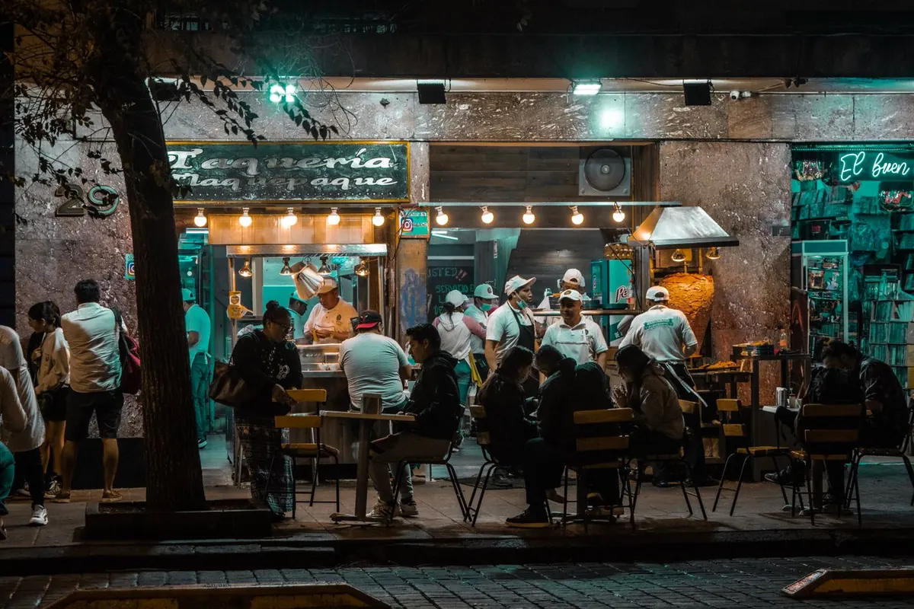
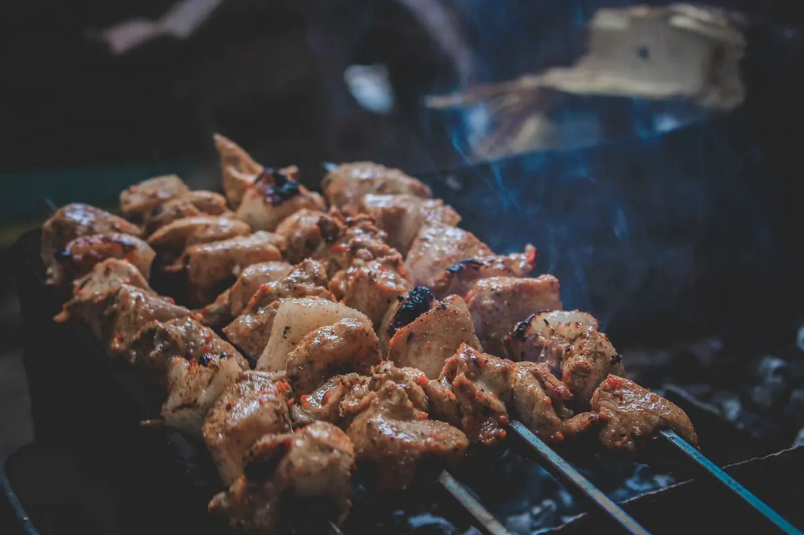
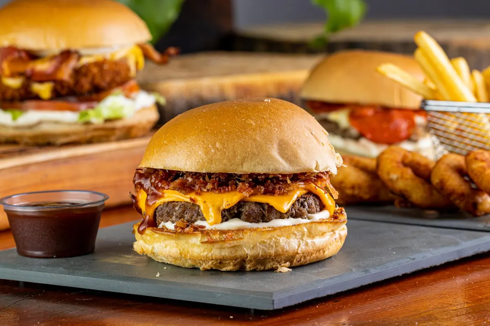
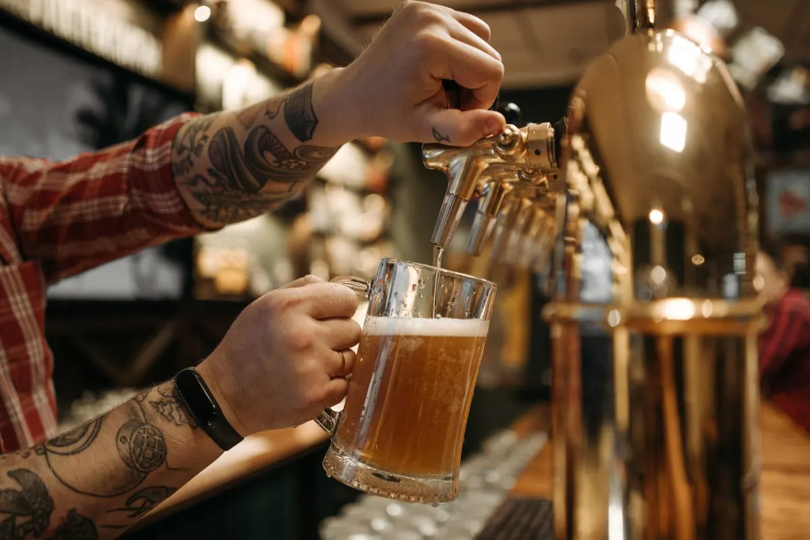
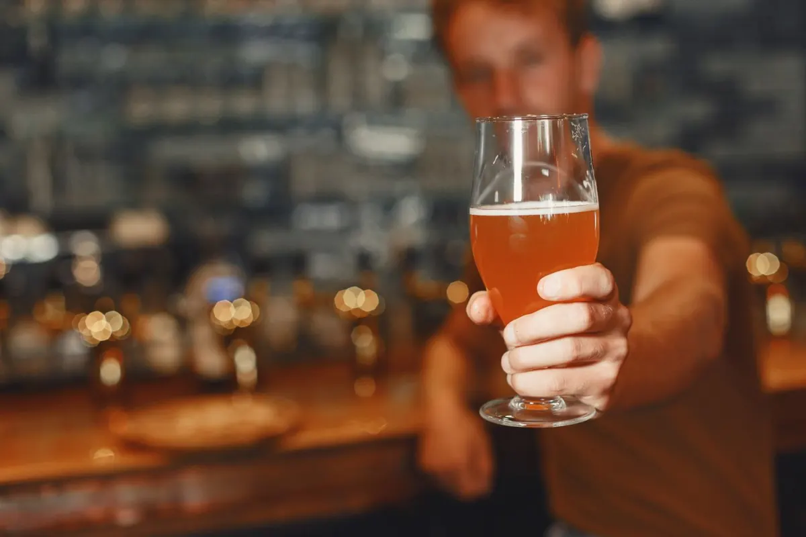
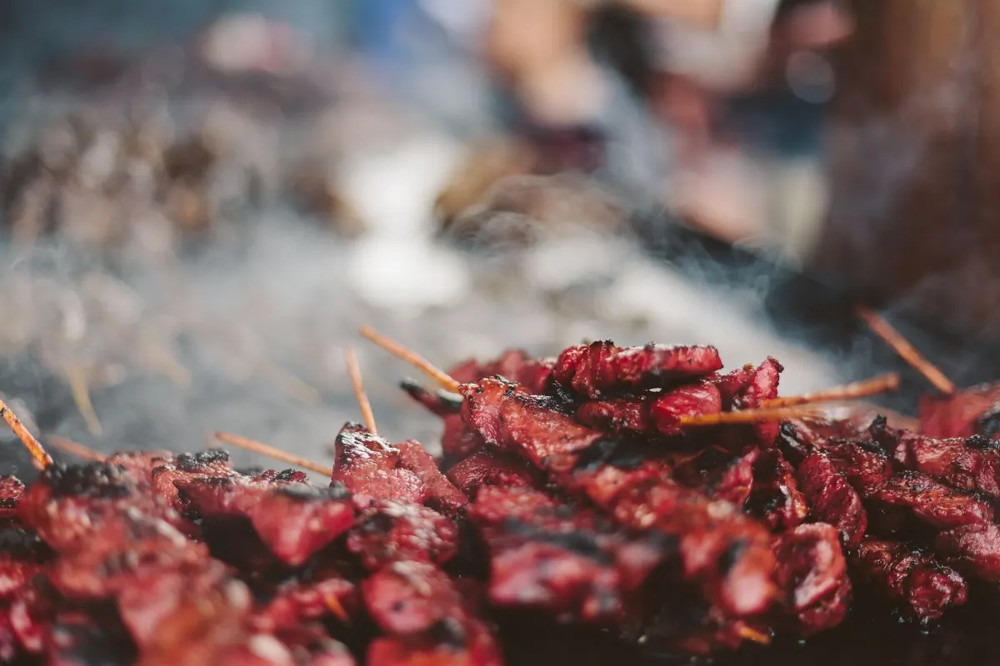

Bar · Lanchonete · Espetinhos
A esquina do Campos Elíseos que fica acesa a noite inteira.
Porção bem servida, espetinho na brasa e cerveja gelada. Das 18h até de manhã, na Rua Silvia Leite de Godoy.
Das 18h às 6h
no Restaurant Guru
Uma esquina, a noite inteira

Porções
A porção de tilápia é a mais lembrada nas avaliações. Tem também as fritas e os petiscos de boteco.
Ver o cardápio →
Espetinhos e grelhados
Carne na brasa para acompanhar a cerveja, do primeiro chopp ao último pedido.
Ver o cardápio →
Lanches
Lanchonete também: lanche no prato para quem sai tarde e quer comer de verdade.
Ver o cardápio →
Cerveja gelada
A cerveja gelada aparece em quase todo elogio. Na mesa da calçada, melhor ainda.
Ver o cardápio →Delivery pelo iFood, com pedido mínimo de R$ 10. Mesas na calçada.
O que falam da casa
Porção caprichada e preço justo.
É o que mais aparece nas opiniões de quem já sentou na calçada do Soares.
Porções bem servidas, com destaque para a de tilápia.Resumo das avaliações
Cerveja gelada e atendimento rápido, mesmo com a casa cheia.Resumo das avaliações
Preço justo para o tamanho do prato. Quem vai, recomenda.Resumo das avaliações
Cardápio
Pra pedir na mesa ou em casa.
Os preços e a lista completa estão no iFood da casa, sempre atualizados.
Porções
- Tilápia em iscas
- Batata frita
- Calabresa acebolada
- Frango a passarinho
Espetinhos
- Carne
- Frango com bacon
- Linguiça
- Queijo coalho
Lanches
- X-salada
- X-bacon
- Lanche de pernil
- Misto quente
Bebidas
- Cerveja garrafa e lata
- Chopp
- Caipirinha
- Refrigerante e água
Itens de exemplo para a proposta: a lista final sai do cardápio da casa.




Reservas e eventos
Do happy hour ao aniversário na calçada.
Junta a turma que a casa separa as mesas. Aniversário, confraternização da empresa ou porção em quantidade para levar.
Visite
Rua Silvia Leite de Godoy, 165.
Jardim Campos Elíseos, Campinas/SP. Mesas na calçada, na esquina.
- Bar e lanchoneteTodos os dias, 18h–6h
- DeliveryPelo iFood
- Telefone(19) 3367-5315